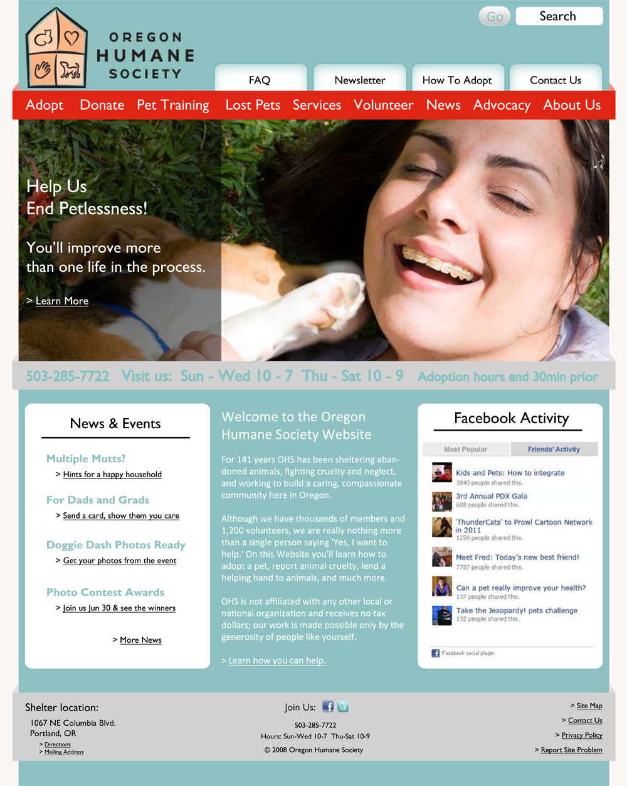
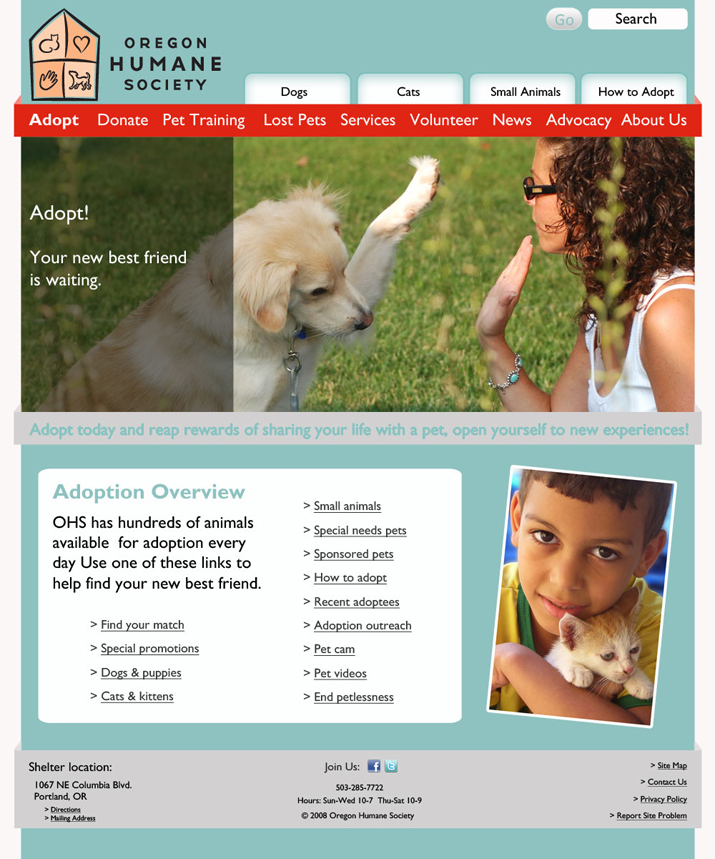
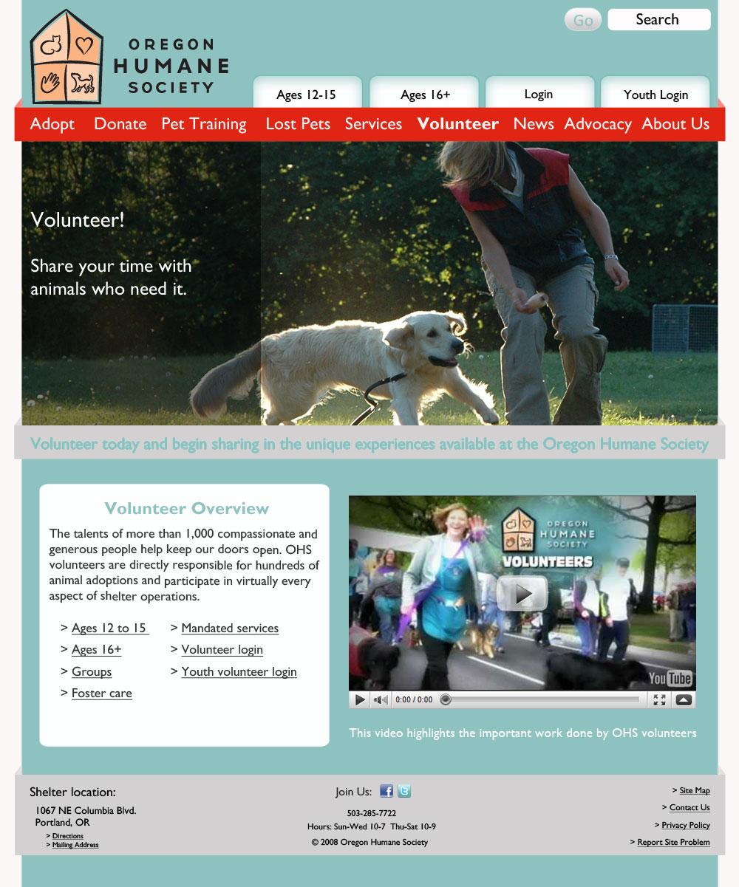
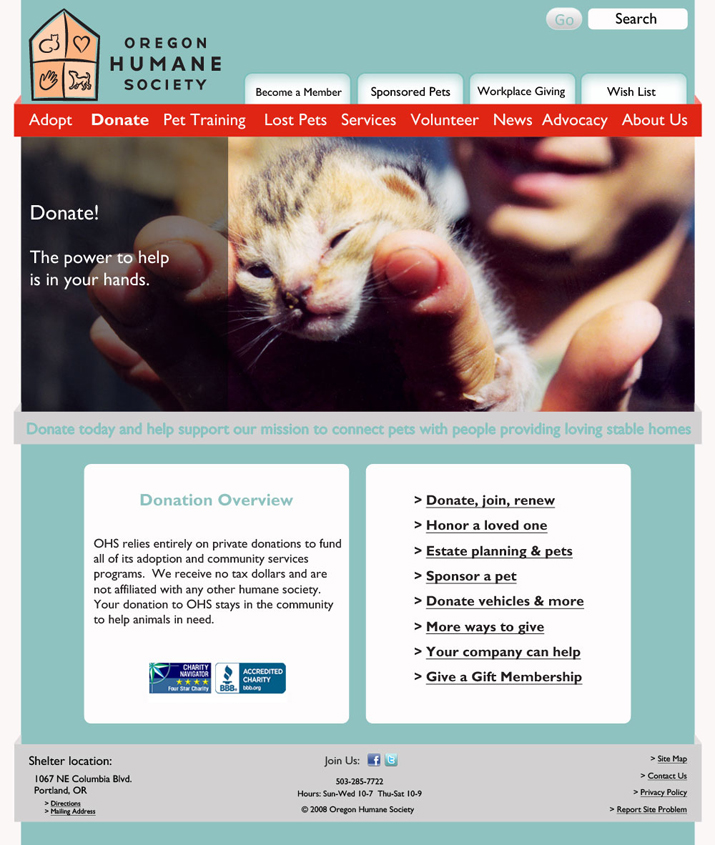

-

This redesign was undertaken for a course on art direction for the web. We were tasked with giving a vibrant, contemporary look to the Oregon Humane Society's web site.
-

The redesign color scheme was based upon the humane society's successful and prolific media campaign. This way they could take advantage of all the the brand recognition their they attained through print and billboard ads.
-

This mobile app was developed in 2010 using the Alpha 3 version of the jQuery Mobile framework and can be viewed here.
-

This is my design. The current Oregon Human Society site upon which this design is based can be viewed here.